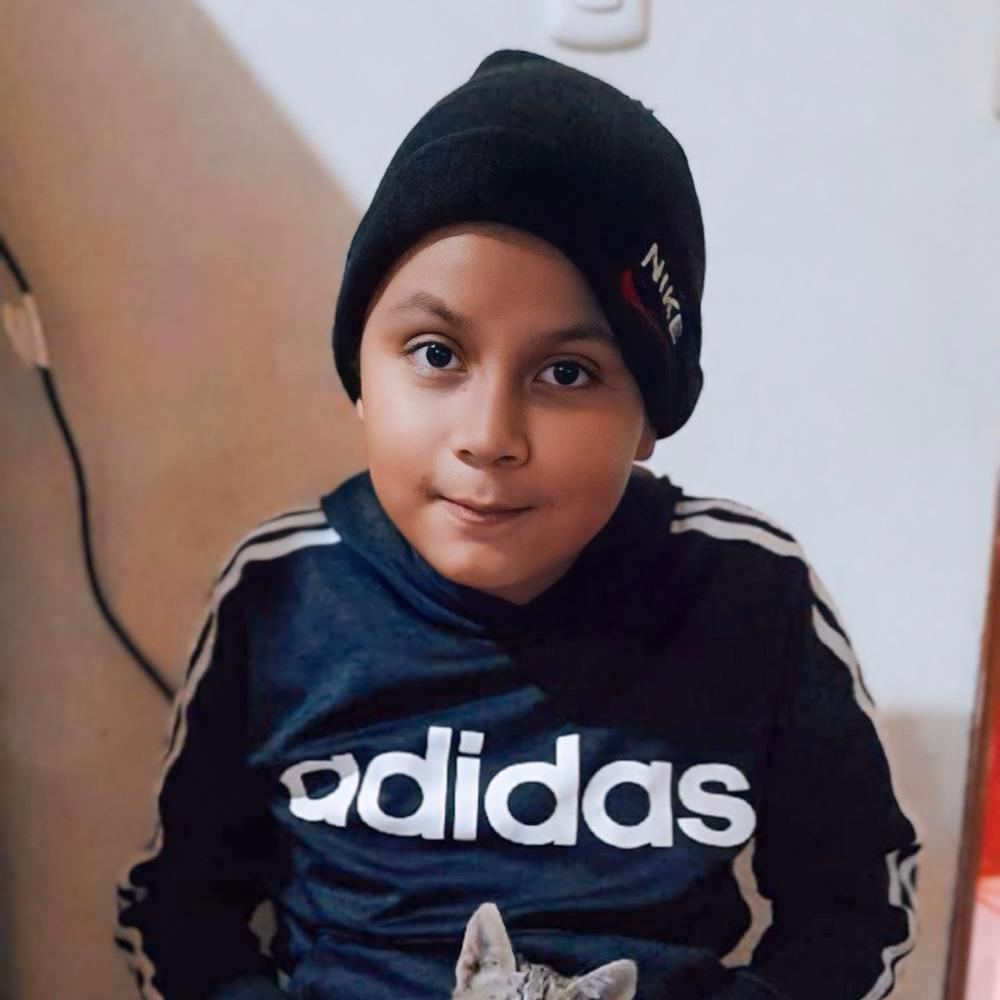
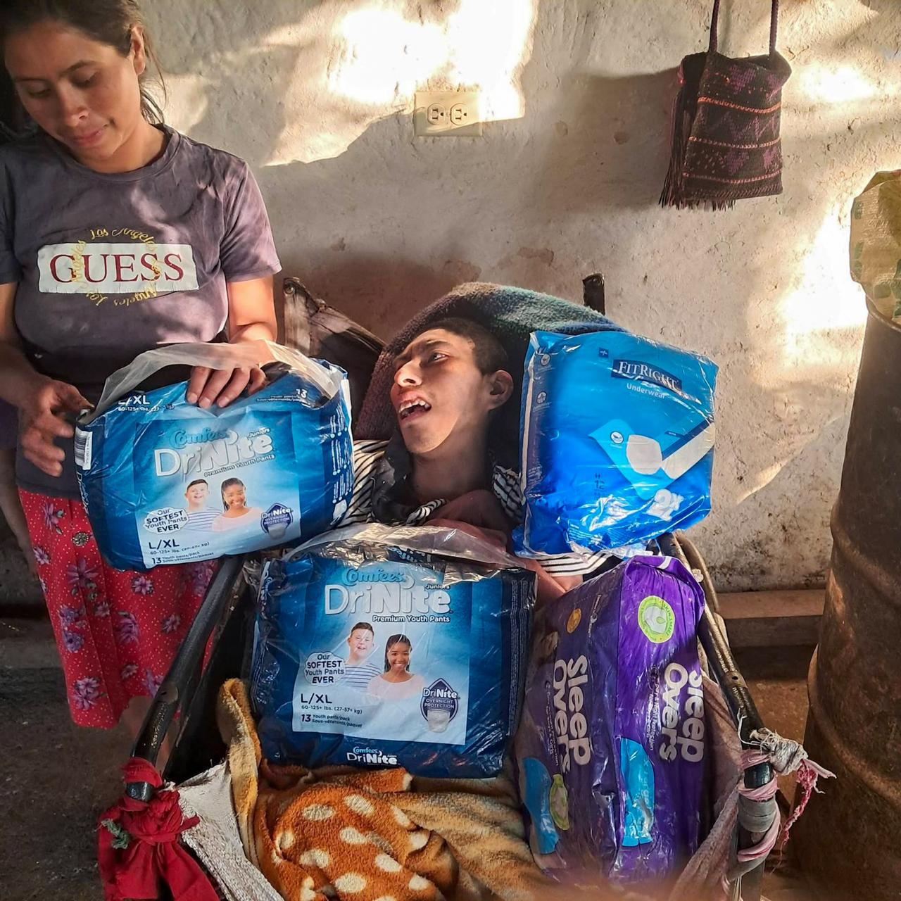

Imagen del caso
Tablero de Apoyo · Laboratorio Clínico Santa Lucía
Juntos lo hacemos posible
Cada donación transforma vidas. Conoce y contacta directamente con quienes necesitan tu apoyo.
Tablero de Noticias
Casos que necesitan tu apoyo
Apoyo medico especializado
Niño de 12 años con Distrofia Muscular que requiere apoyo médico especializado.

📸 Imagen del casoComunidad de San Jose Copantillo, Madre e hijo
Doña Matea Gomez y a su hijo Carmen Diaz, originarios de la Comunidad de San Jose Copantillo sufren derrame cerebral y una paralis infantil.